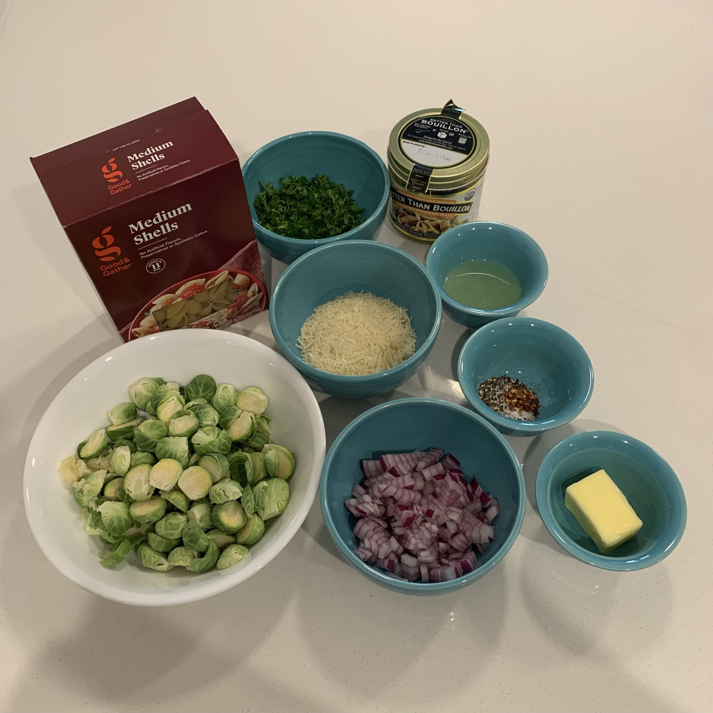
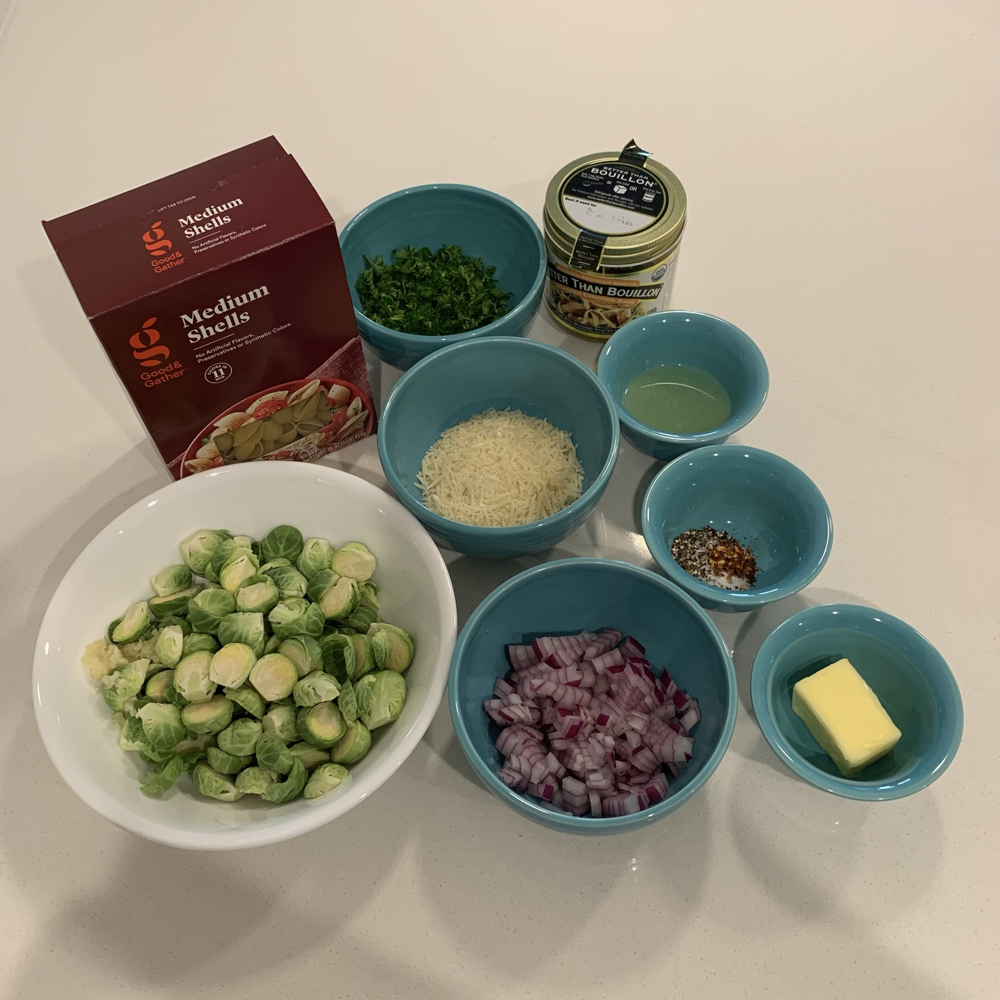

BRUSSELS SPROUTS SHELLS
 

Brussels Sprouts Shells Ingredients
INGREDIENTS
- 1 Tbsp olive oil
- 3 Tbsp butter
- 1/2 red onion, chopped
- 3 cloves garlic, minced
- 12 oz fresh Brussels sprouts, halved from top to stem
- 1 cup chicken broth
- 1/8 tsp crushed red pepper flakes
- 1/2 tsp ground black pepper
- 1 tsp salt
- 1 1/2 tsp lemon juice
- 1/2 cup fresh parsley, chopped
- 1/2 cup grated Parmesan cheese
- 12 oz medium pasta shells
DIRECTIONS
- Heat the olive oil in a large skillet over medium heat.
- Add the red onion and cook, stirring occasionally, until the onion starts to become translucent.
- While the onion cooks, start cooking pasta shells according to package directions. When the pasta is finished, drain.
- Once the onion is translucent, add the garlic, Brussels sprouts, broth, salt, pepper, and red pepper flakes to the skillet and stir. Cover and let simmer for about 5 minutes.
- Add the lemon juice, parsley, Parmesan, and butter to the skillet and stir. Remove from heat.
- Add the cooked shells to the skillet and toss until pasta is evenly coated.
- Adjust seasoning to taste.
Adapted from: Food & Wine Pasta Shells with Chicken and Brussels Sprouts